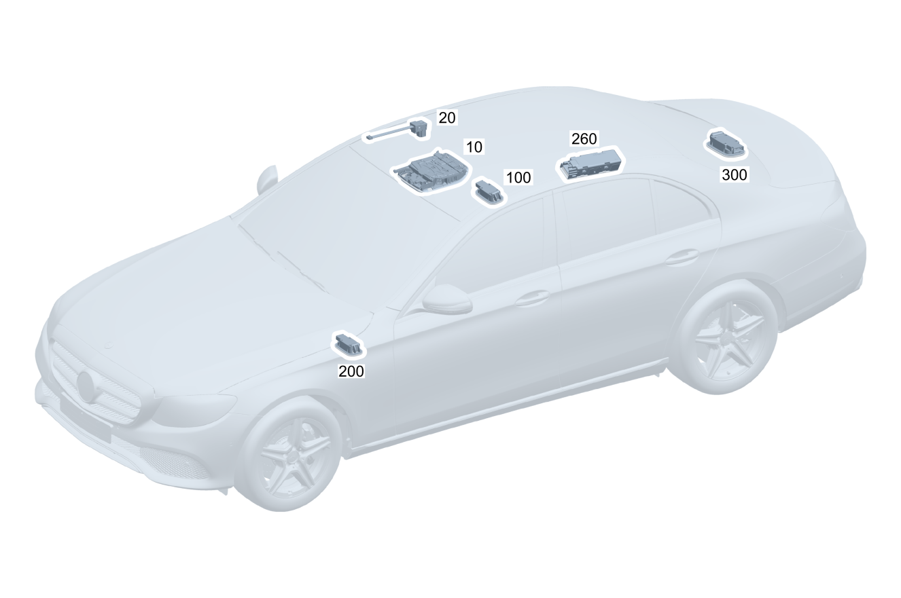

| № | Артикул | Название | Кол. | Примечание | Ограничение |
|---|---|---|---|---|---|
| 10 | A 000 900 93 36 | Блок управления | 1 | Потолочная блок\-панель управления [672] ДЕТАЛЬ ПОСЛЕ УСТАН.ПРОВЕРИТЬ НА АКТУАЛЬНОСТЬ "ПРОШИВНОГО" ПО [414] СТАРУЮ ДЕТАЛЬ УСТАНАВЛИВАТЬ БОЛЬШЕ НЕ РАЗРЕШАЕТСЯ | 351 |
| 10 | A 000 900 08 38 | Блок управления (CONTROL UNIT) | 1 | Потолочная блок\-панель управления [672] ДЕТАЛЬ ПОСЛЕ УСТАН.ПРОВЕРИТЬ НА АКТУАЛЬНОСТЬ "ПРОШИВНОГО" ПО | 351 |
| 10 | A 000 900 06 37 | Блок управления | 1 | Потолочная блок\-панель управления [672] ДЕТАЛЬ ПОСЛЕ УСТАН.ПРОВЕРИТЬ НА АКТУАЛЬНОСТЬ "ПРОШИВНОГО" ПО | 351 |
| 10 | A 000 900 59 40 | Блок управления | 1 | Потолочная блок\-панель управления [672] ДЕТАЛЬ ПОСЛЕ УСТАН.ПРОВЕРИТЬ НА АКТУАЛЬНОСТЬ "ПРОШИВНОГО" ПО | 351 |
| 10 | A 000 900 94 36 | Блок управления | 1 | Потолочная блок\-панель управления [672] ДЕТАЛЬ ПОСЛЕ УСТАН.ПРОВЕРИТЬ НА АКТУАЛЬНОСТЬ "ПРОШИВНОГО" ПО [414] СТАРУЮ ДЕТАЛЬ УСТАНАВЛИВАТЬ БОЛЬШЕ НЕ РАЗРЕШАЕТСЯ | 891 |
| 10 | A 000 900 10 38 | Блок управления | 1 | Потолочная блок\-панель управления [672] ДЕТАЛЬ ПОСЛЕ УСТАН.ПРОВЕРИТЬ НА АКТУАЛЬНОСТЬ "ПРОШИВНОГО" ПО | 891 |
| 10 | A 000 900 08 37 | Блок управления | 1 | Потолочная блок\-панель управления [672] ДЕТАЛЬ ПОСЛЕ УСТАН.ПРОВЕРИТЬ НА АКТУАЛЬНОСТЬ "ПРОШИВНОГО" ПО | 891 |
| 10 | A 000 900 61 40 | Блок управления | 1 | Потолочная блок\-панель управления [672] ДЕТАЛЬ ПОСЛЕ УСТАН.ПРОВЕРИТЬ НА АКТУАЛЬНОСТЬ "ПРОШИВНОГО" ПО | 891 |
| 10 | A 000 900 13 38 | Блок управления | 1 | Потолочная блок\-панель управления [672] ДЕТАЛЬ ПОСЛЕ УСТАН.ПРОВЕРИТЬ НА АКТУАЛЬНОСТЬ "ПРОШИВНОГО" ПО | (413/414)+351 |
| 10 | A 000 900 11 37 | Блок управления | 1 | Потолочная блок\-панель управления [672] ДЕТАЛЬ ПОСЛЕ УСТАН.ПРОВЕРИТЬ НА АКТУАЛЬНОСТЬ "ПРОШИВНОГО" ПО | (413/414)+351 |
| 10 | A 000 900 66 40 | Блок управления | 1 | Потолочная блок\-панель управления [672] ДЕТАЛЬ ПОСЛЕ УСТАН.ПРОВЕРИТЬ НА АКТУАЛЬНОСТЬ "ПРОШИВНОГО" ПО | (413/414)+351 |
| 10 | A 000 900 15 38 | Блок управления (CONTROL UNIT) | 1 | Потолочная блок\-панель управления [672] ДЕТАЛЬ ПОСЛЕ УСТАН.ПРОВЕРИТЬ НА АКТУАЛЬНОСТЬ "ПРОШИВНОГО" ПО | (413/414)+891 |
| 10 | A 000 900 13 37 | Блок управления | 1 | Потолочная блок\-панель управления [672] ДЕТАЛЬ ПОСЛЕ УСТАН.ПРОВЕРИТЬ НА АКТУАЛЬНОСТЬ "ПРОШИВНОГО" ПО | (413/414)+891 |
| 10 | A 000 900 68 40 | Блок управления | 1 | Потолочная блок\-панель управления [672] ДЕТАЛЬ ПОСЛЕ УСТАН.ПРОВЕРИТЬ НА АКТУАЛЬНОСТЬ "ПРОШИВНОГО" ПО | (413/414)+891 |
| 10 | A 000 900 16 38 | Блок управления (CONTROL UNIT) | 1 | Потолочная блок\-панель управления [672] ДЕТАЛЬ ПОСЛЕ УСТАН.ПРОВЕРИТЬ НА АКТУАЛЬНОСТЬ "ПРОШИВНОГО" ПО | (413/414)+891+351 |
| 10 | A 000 900 14 37 | Блок управления (CONTROL UNIT) | 1 | Потолочная блок\-панель управления [672] ДЕТАЛЬ ПОСЛЕ УСТАН.ПРОВЕРИТЬ НА АКТУАЛЬНОСТЬ "ПРОШИВНОГО" ПО | (413/414)+891+351 |
| 10 | A 000 900 69 40 | Блок управления | 1 | Потолочная блок\-панель управления [672] ДЕТАЛЬ ПОСЛЕ УСТАН.ПРОВЕРИТЬ НА АКТУАЛЬНОСТЬ "ПРОШИВНОГО" ПО | (413/414)+891+351 |
| 10 | A 000 900 17 38 | Блок управления | 1 | Потолочная блок\-панель управления [672] ДЕТАЛЬ ПОСЛЕ УСТАН.ПРОВЕРИТЬ НА АКТУАЛЬНОСТЬ "ПРОШИВНОГО" ПО | (413/414)+891+(882/852) |
| 10 | A 000 900 15 37 | Блок управления | 1 | Потолочная блок\-панель управления [672] ДЕТАЛЬ ПОСЛЕ УСТАН.ПРОВЕРИТЬ НА АКТУАЛЬНОСТЬ "ПРОШИВНОГО" ПО | (413/414)+891+(882/852) |
| 10 | A 000 900 71 40 | Блок управления | 1 | Потолочная блок\-панель управления [672] ДЕТАЛЬ ПОСЛЕ УСТАН.ПРОВЕРИТЬ НА АКТУАЛЬНОСТЬ "ПРОШИВНОГО" ПО | (413/414)+891+(882/852) |
| 10 | A 000 900 18 38 | Блок управления | 1 | Потолочная блок\-панель управления [672] ДЕТАЛЬ ПОСЛЕ УСТАН.ПРОВЕРИТЬ НА АКТУАЛЬНОСТЬ "ПРОШИВНОГО" ПО | (413/414)+891+(882/852)+351 |
| 10 | A 000 900 16 37 | Блок управления | 1 | Потолочная блок\-панель управления [672] ДЕТАЛЬ ПОСЛЕ УСТАН.ПРОВЕРИТЬ НА АКТУАЛЬНОСТЬ "ПРОШИВНОГО" ПО | (413/414)+891+(882/852)+351 |
| 10 | A 000 900 72 40 | Блок управления | 1 | Потолочная блок\-панель управления [672] ДЕТАЛЬ ПОСЛЕ УСТАН.ПРОВЕРИТЬ НА АКТУАЛЬНОСТЬ "ПРОШИВНОГО" ПО | (413/414)+891+(882/852)+351 |
| 10 | A 000 900 14 38 | Блок управления | 1 | Потолочная блок\-панель управления [672] ДЕТАЛЬ ПОСЛЕ УСТАН.ПРОВЕРИТЬ НА АКТУАЛЬНОСТЬ "ПРОШИВНОГО" ПО | (413/414)+(882/852)+351 |
| 10 | A 000 900 12 37 | Блок управления | 1 | Потолочная блок\-панель управления [672] ДЕТАЛЬ ПОСЛЕ УСТАН.ПРОВЕРИТЬ НА АКТУАЛЬНОСТЬ "ПРОШИВНОГО" ПО | (413/414)+(882/852)+351 |
| 10 | A 000 900 67 40 | Блок управления (CONTROL UNIT) | 1 | Потолочная блок\-панель управления [672] ДЕТАЛЬ ПОСЛЕ УСТАН.ПРОВЕРИТЬ НА АКТУАЛЬНОСТЬ "ПРОШИВНОГО" ПО | (413/414)+(882/852)+351 |
| 10 | A 000 900 95 36 | Блок управления (CONTROL UNIT) | 1 | Потолочная блок\-панель управления [672] ДЕТАЛЬ ПОСЛЕ УСТАН.ПРОВЕРИТЬ НА АКТУАЛЬНОСТЬ "ПРОШИВНОГО" ПО [414] СТАРУЮ ДЕТАЛЬ УСТАНАВЛИВАТЬ БОЛЬШЕ НЕ РАЗРЕШАЕТСЯ | 891+351 |
| 10 | A 000 900 11 38 | Блок управления | 1 | Потолочная блок\-панель управления [672] ДЕТАЛЬ ПОСЛЕ УСТАН.ПРОВЕРИТЬ НА АКТУАЛЬНОСТЬ "ПРОШИВНОГО" ПО | 891+351 |
| 10 | A 000 900 09 37 | Блок управления | 1 | Потолочная блок\-панель управления [672] ДЕТАЛЬ ПОСЛЕ УСТАН.ПРОВЕРИТЬ НА АКТУАЛЬНОСТЬ "ПРОШИВНОГО" ПО | 891+351 |
| 10 | A 000 900 62 40 | Блок управления (CONTROL UNIT) | 1 | Потолочная блок\-панель управления [672] ДЕТАЛЬ ПОСЛЕ УСТАН.ПРОВЕРИТЬ НА АКТУАЛЬНОСТЬ "ПРОШИВНОГО" ПО | 891+351 |
| 10 | A 000 900 20 34 | Блок управления | 1 | Потолочная блок\-панель управления [672] ДЕТАЛЬ ПОСЛЕ УСТАН.ПРОВЕРИТЬ НА АКТУАЛЬНОСТЬ "ПРОШИВНОГО" ПО [414] СТАРУЮ ДЕТАЛЬ УСТАНАВЛИВАТЬ БОЛЬШЕ НЕ РАЗРЕШАЕТСЯ | 891+(882/852) |
| 10 | A 000 900 19 38 | Блок управления | 1 | Потолочная блок\-панель управления [672] ДЕТАЛЬ ПОСЛЕ УСТАН.ПРОВЕРИТЬ НА АКТУАЛЬНОСТЬ "ПРОШИВНОГО" ПО | 891+(882/852) |
| 10 | A 000 900 17 37 | Блок управления | 1 | Потолочная блок\-панель управления [672] ДЕТАЛЬ ПОСЛЕ УСТАН.ПРОВЕРИТЬ НА АКТУАЛЬНОСТЬ "ПРОШИВНОГО" ПО | 891+(882/852) |
| 10 | A 000 900 74 40 | Блок управления | 1 | Потолочная блок\-панель управления [672] ДЕТАЛЬ ПОСЛЕ УСТАН.ПРОВЕРИТЬ НА АКТУАЛЬНОСТЬ "ПРОШИВНОГО" ПО | 891+(882/852) |
| 10 | A 000 900 12 38 | Блок управления | 1 | Потолочная блок\-панель управления [672] ДЕТАЛЬ ПОСЛЕ УСТАН.ПРОВЕРИТЬ НА АКТУАЛЬНОСТЬ "ПРОШИВНОГО" ПО | 891+(882/852)+351 |
| 10 | A 000 900 10 37 | Блок управления | 1 | Потолочная блок\-панель управления [672] ДЕТАЛЬ ПОСЛЕ УСТАН.ПРОВЕРИТЬ НА АКТУАЛЬНОСТЬ "ПРОШИВНОГО" ПО | 891+(882/852)+351 |
| 10 | A 000 900 64 40 | Блок управления | 1 | Потолочная блок\-панель управления [672] ДЕТАЛЬ ПОСЛЕ УСТАН.ПРОВЕРИТЬ НА АКТУАЛЬНОСТЬ "ПРОШИВНОГО" ПО | 891+(882/852)+351 |
| 10 | A 000 900 09 38 | Блок управления | 1 | Потолочная блок\-панель управления [672] ДЕТАЛЬ ПОСЛЕ УСТАН.ПРОВЕРИТЬ НА АКТУАЛЬНОСТЬ "ПРОШИВНОГО" ПО | (882/852)+351 |
| 10 | A 000 900 07 37 | Блок управления | 1 | Потолочная блок\-панель управления [672] ДЕТАЛЬ ПОСЛЕ УСТАН.ПРОВЕРИТЬ НА АКТУАЛЬНОСТЬ "ПРОШИВНОГО" ПО | (882/852)+351 |
| 10 | A 000 900 60 40 | Блок управления | 1 | Потолочная блок\-панель управления [672] ДЕТАЛЬ ПОСЛЕ УСТАН.ПРОВЕРИТЬ НА АКТУАЛЬНОСТЬ "ПРОШИВНОГО" ПО | (882/852)+351 |
| 10 | A 000 900 19 45 | Блок управления | 1 | Потолочная блок\-панель управления [672] ДЕТАЛЬ ПОСЛЕ УСТАН.ПРОВЕРИТЬ НА АКТУАЛЬНОСТЬ "ПРОШИВНОГО" ПО | 351+(804+054/805) |
| 10 | A 000 900 19 45 | Блок управления | 1 | Потолочная блок\-панель управления [672] ДЕТАЛЬ ПОСЛЕ УСТАН.ПРОВЕРИТЬ НА АКТУАЛЬНОСТЬ "ПРОШИВНОГО" ПО | 351 |
| 10 | A 000 900 21 45 | Блок управления | 1 | Потолочная блок\-панель управления [672] ДЕТАЛЬ ПОСЛЕ УСТАН.ПРОВЕРИТЬ НА АКТУАЛЬНОСТЬ "ПРОШИВНОГО" ПО | 891+(804+054/805) |
| 10 | A 000 900 21 45 | Блок управления | 1 | Потолочная блок\-панель управления [672] ДЕТАЛЬ ПОСЛЕ УСТАН.ПРОВЕРИТЬ НА АКТУАЛЬНОСТЬ "ПРОШИВНОГО" ПО | 891 |
| 10 | A 000 900 26 45 | Блок управления | 1 | Потолочная блок\-панель управления [672] ДЕТАЛЬ ПОСЛЕ УСТАН.ПРОВЕРИТЬ НА АКТУАЛЬНОСТЬ "ПРОШИВНОГО" ПО | (413/414)+351+(804+054/805) |
| 10 | A 000 900 26 45 | Блок управления | 1 | Потолочная блок\-панель управления [672] ДЕТАЛЬ ПОСЛЕ УСТАН.ПРОВЕРИТЬ НА АКТУАЛЬНОСТЬ "ПРОШИВНОГО" ПО | (413/414)+351 |
| 10 | A 000 900 28 45 | Блок управления | 1 | Потолочная блок\-панель управления [672] ДЕТАЛЬ ПОСЛЕ УСТАН.ПРОВЕРИТЬ НА АКТУАЛЬНОСТЬ "ПРОШИВНОГО" ПО | (413/414)+891+(804+054/805) |
| 10 | A 000 900 28 45 | Блок управления | 1 | Потолочная блок\-панель управления [672] ДЕТАЛЬ ПОСЛЕ УСТАН.ПРОВЕРИТЬ НА АКТУАЛЬНОСТЬ "ПРОШИВНОГО" ПО | (413/414)+891 |
| 10 | A 000 900 35 45 | Блок управления | 1 | Потолочная блок\-панель управления [672] ДЕТАЛЬ ПОСЛЕ УСТАН.ПРОВЕРИТЬ НА АКТУАЛЬНОСТЬ "ПРОШИВНОГО" ПО | (413/414)+891+351+(804+054/805) |
| 10 | A 000 900 35 45 | Блок управления | 1 | Потолочная блок\-панель управления [672] ДЕТАЛЬ ПОСЛЕ УСТАН.ПРОВЕРИТЬ НА АКТУАЛЬНОСТЬ "ПРОШИВНОГО" ПО | (413/414)+891+351 |
| 10 | A 000 900 38 45 | Блок управления | 1 | Потолочная блок\-панель управления [672] ДЕТАЛЬ ПОСЛЕ УСТАН.ПРОВЕРИТЬ НА АКТУАЛЬНОСТЬ "ПРОШИВНОГО" ПО | (413/414)+891+(882/852)+(804+054/805) |
| 10 | A 000 900 38 45 | Блок управления | 1 | Потолочная блок\-панель управления [672] ДЕТАЛЬ ПОСЛЕ УСТАН.ПРОВЕРИТЬ НА АКТУАЛЬНОСТЬ "ПРОШИВНОГО" ПО | (413/414)+891+(882/852) |
| 10 | A 000 900 39 45 | Блок управления | 1 | Потолочная блок\-панель управления [672] ДЕТАЛЬ ПОСЛЕ УСТАН.ПРОВЕРИТЬ НА АКТУАЛЬНОСТЬ "ПРОШИВНОГО" ПО | (413/414)+891+(882/852)+351+(804+054/805) |
| 10 | A 000 900 39 45 | Блок управления | 1 | Потолочная блок\-панель управления [672] ДЕТАЛЬ ПОСЛЕ УСТАН.ПРОВЕРИТЬ НА АКТУАЛЬНОСТЬ "ПРОШИВНОГО" ПО | (413/414)+891+(882/852)+351 |
| 10 | A 000 900 27 45 | Блок управления (CONTROL UNIT) | 1 | Потолочная блок\-панель управления [672] ДЕТАЛЬ ПОСЛЕ УСТАН.ПРОВЕРИТЬ НА АКТУАЛЬНОСТЬ "ПРОШИВНОГО" ПО | (413/414)+(882/852)+351+(804+054/805) |
| 10 | A 000 900 27 45 | Блок управления (CONTROL UNIT) | 1 | Потолочная блок\-панель управления [672] ДЕТАЛЬ ПОСЛЕ УСТАН.ПРОВЕРИТЬ НА АКТУАЛЬНОСТЬ "ПРОШИВНОГО" ПО | (413/414)+(882/852)+351 |
| 10 | A 000 900 22 45 | Блок управления | 1 | Потолочная блок\-панель управления [672] ДЕТАЛЬ ПОСЛЕ УСТАН.ПРОВЕРИТЬ НА АКТУАЛЬНОСТЬ "ПРОШИВНОГО" ПО | 891+351+(804+054/805) |
| 10 | A 000 900 22 45 | Блок управления | 1 | Потолочная блок\-панель управления [672] ДЕТАЛЬ ПОСЛЕ УСТАН.ПРОВЕРИТЬ НА АКТУАЛЬНОСТЬ "ПРОШИВНОГО" ПО | 891+351 |
| 10 | A 000 900 41 45 | Блок управления | 1 | Потолочная блок\-панель управления [672] ДЕТАЛЬ ПОСЛЕ УСТАН.ПРОВЕРИТЬ НА АКТУАЛЬНОСТЬ "ПРОШИВНОГО" ПО | 891+(882/852)+(804+054/805) |
| 10 | A 000 900 41 45 | Блок управления | 1 | Потолочная блок\-панель управления [672] ДЕТАЛЬ ПОСЛЕ УСТАН.ПРОВЕРИТЬ НА АКТУАЛЬНОСТЬ "ПРОШИВНОГО" ПО | 891+(882/852) |
| 10 | A 000 900 24 45 | Блок управления | 1 | Потолочная блок\-панель управления [672] ДЕТАЛЬ ПОСЛЕ УСТАН.ПРОВЕРИТЬ НА АКТУАЛЬНОСТЬ "ПРОШИВНОГО" ПО | 891+(882/852)+351+(804+054/805) |
| 10 | A 000 900 24 45 | Блок управления | 1 | Потолочная блок\-панель управления [672] ДЕТАЛЬ ПОСЛЕ УСТАН.ПРОВЕРИТЬ НА АКТУАЛЬНОСТЬ "ПРОШИВНОГО" ПО | 891+(882/852)+351 |
| 10 | A 000 900 20 45 | Блок управления | 1 | Потолочная блок\-панель управления [672] ДЕТАЛЬ ПОСЛЕ УСТАН.ПРОВЕРИТЬ НА АКТУАЛЬНОСТЬ "ПРОШИВНОГО" ПО | (882/852)+351+(804+054/805) |
| 10 | A 000 900 20 45 | Блок управления | 1 | Потолочная блок\-панель управления [672] ДЕТАЛЬ ПОСЛЕ УСТАН.ПРОВЕРИТЬ НА АКТУАЛЬНОСТЬ "ПРОШИВНОГО" ПО | (882/852)+351 |
| 10 | A 000 900 19 45 | Блок управления | 1 | Потолочная блок\-панель управления [672] ДЕТАЛЬ ПОСЛЕ УСТАН.ПРОВЕРИТЬ НА АКТУАЛЬНОСТЬ "ПРОШИВНОГО" ПО | 351 |
| 10 | A 000 900 26 45 | Блок управления | 1 | Потолочная блок\-панель управления [672] ДЕТАЛЬ ПОСЛЕ УСТАН.ПРОВЕРИТЬ НА АКТУАЛЬНОСТЬ "ПРОШИВНОГО" ПО | (413/414)+351 |
| 10 | A 000 900 27 45 | Блок управления (CONTROL UNIT) | 1 | Потолочная блок\-панель управления [672] ДЕТАЛЬ ПОСЛЕ УСТАН.ПРОВЕРИТЬ НА АКТУАЛЬНОСТЬ "ПРОШИВНОГО" ПО | (413/414)+(882/852)+351 |
| 10 | A 000 900 20 45 | Блок управления | 1 | Потолочная блок\-панель управления [672] ДЕТАЛЬ ПОСЛЕ УСТАН.ПРОВЕРИТЬ НА АКТУАЛЬНОСТЬ "ПРОШИВНОГО" ПО | (882/852)+351 |
| 10 | A 000 900 23 45 | Блок управления | 1 | Потолочная блок\-панель управления [672] ДЕТАЛЬ ПОСЛЕ УСТАН.ПРОВЕРИТЬ НА АКТУАЛЬНОСТЬ "ПРОШИВНОГО" ПО | 891+77B+351+805 |
| 10 | A 000 900 25 45 | Блок управления | 1 | Потолочная блок\-панель управления [672] ДЕТАЛЬ ПОСЛЕ УСТАН.ПРОВЕРИТЬ НА АКТУАЛЬНОСТЬ "ПРОШИВНОГО" ПО | 891+(882/852)+77B+351+805 |
| 10 | A 000 900 37 45 | Блок управления | 1 | Потолочная блок\-панель управления [672] ДЕТАЛЬ ПОСЛЕ УСТАН.ПРОВЕРИТЬ НА АКТУАЛЬНОСТЬ "ПРОШИВНОГО" ПО | (413/414)+891+77B+351+805 |
| 10 | A 000 900 37 45 | Блок управления | 1 | Потолочная блок\-панель управления [672] ДЕТАЛЬ ПОСЛЕ УСТАН.ПРОВЕРИТЬ НА АКТУАЛЬНОСТЬ "ПРОШИВНОГО" ПО | (413/414)+891+77B+351 |
| 10 | A 000 900 40 45 | Блок управления | 1 | Потолочная блок\-панель управления [672] ДЕТАЛЬ ПОСЛЕ УСТАН.ПРОВЕРИТЬ НА АКТУАЛЬНОСТЬ "ПРОШИВНОГО" ПО | (413/414)+891+(882/852)+77B+351+805 |
| 10 | A 000 900 40 45 | Блок управления | 1 | Потолочная блок\-панель управления [672] ДЕТАЛЬ ПОСЛЕ УСТАН.ПРОВЕРИТЬ НА АКТУАЛЬНОСТЬ "ПРОШИВНОГО" ПО | (413/414)+891+(882/852)+77B+351 |
| 10 | A 000 900 56 56 | Блок управления | 1 | Потолочная блок\-панель управления [672] ДЕТАЛЬ ПОСЛЕ УСТАН.ПРОВЕРИТЬ НА АКТУАЛЬНОСТЬ "ПРОШИВНОГО" ПО | 891+(806+056/807) |
| 10 | A 000 900 18 58 | Блок управления | 1 | Потолочная блок\-панель управления [672] ДЕТАЛЬ ПОСЛЕ УСТАН.ПРОВЕРИТЬ НА АКТУАЛЬНОСТЬ "ПРОШИВНОГО" ПО [414] СТАРУЮ ДЕТАЛЬ УСТАНАВЛИВАТЬ БОЛЬШЕ НЕ РАЗРЕШАЕТСЯ | 891+(806+056/807) |
| 10 | A 000 900 18 58 | Блок управления | 1 | Потолочная блок\-панель управления [672] ДЕТАЛЬ ПОСЛЕ УСТАН.ПРОВЕРИТЬ НА АКТУАЛЬНОСТЬ "ПРОШИВНОГО" ПО [414] СТАРУЮ ДЕТАЛЬ УСТАНАВЛИВАТЬ БОЛЬШЕ НЕ РАЗРЕШАЕТСЯ | 891 |
| 10 | A 000 900 02 59 | Блок управления | 1 | Потолочная блок\-панель управления [672] ДЕТАЛЬ ПОСЛЕ УСТАН.ПРОВЕРИТЬ НА АКТУАЛЬНОСТЬ "ПРОШИВНОГО" ПО | 891 |
| 10 | A 000 900 59 56 | Блок управления | 1 | Потолочная блок\-панель управления [672] ДЕТАЛЬ ПОСЛЕ УСТАН.ПРОВЕРИТЬ НА АКТУАЛЬНОСТЬ "ПРОШИВНОГО" ПО [414] СТАРУЮ ДЕТАЛЬ УСТАНАВЛИВАТЬ БОЛЬШЕ НЕ РАЗРЕШАЕТСЯ | (413/414)+891+(806+056/807) |
| 10 | A 000 900 21 58 | Блок управления | 1 | Потолочная блок\-панель управления [672] ДЕТАЛЬ ПОСЛЕ УСТАН.ПРОВЕРИТЬ НА АКТУАЛЬНОСТЬ "ПРОШИВНОГО" ПО | (413/414)+891+(806+056/807) |
| 10 | A 000 900 21 58 | Блок управления | 1 | Потолочная блок\-панель управления [672] ДЕТАЛЬ ПОСЛЕ УСТАН.ПРОВЕРИТЬ НА АКТУАЛЬНОСТЬ "ПРОШИВНОГО" ПО [414] СТАРУЮ ДЕТАЛЬ УСТАНАВЛИВАТЬ БОЛЬШЕ НЕ РАЗРЕШАЕТСЯ | (413/414)+891 |
| 10 | A 000 900 05 59 | Блок управления | 1 | Потолочная блок\-панель управления [672] ДЕТАЛЬ ПОСЛЕ УСТАН.ПРОВЕРИТЬ НА АКТУАЛЬНОСТЬ "ПРОШИВНОГО" ПО | (413/414)+891 |
| 10 | A 000 900 60 56 | Блок управления | 1 | Потолочная блок\-панель управления [672] ДЕТАЛЬ ПОСЛЕ УСТАН.ПРОВЕРИТЬ НА АКТУАЛЬНОСТЬ "ПРОШИВНОГО" ПО [414] СТАРУЮ ДЕТАЛЬ УСТАНАВЛИВАТЬ БОЛЬШЕ НЕ РАЗРЕШАЕТСЯ | (413/414)+891+351+(806+056/807) |
| 10 | A 000 900 22 58 | Блок управления | 1 | Потолочная блок\-панель управления [672] ДЕТАЛЬ ПОСЛЕ УСТАН.ПРОВЕРИТЬ НА АКТУАЛЬНОСТЬ "ПРОШИВНОГО" ПО | (413/414)+891+351+(806+056/807) |
| 10 | A 000 900 22 58 | Блок управления | 1 | Потолочная блок\-панель управления [672] ДЕТАЛЬ ПОСЛЕ УСТАН.ПРОВЕРИТЬ НА АКТУАЛЬНОСТЬ "ПРОШИВНОГО" ПО [414] СТАРУЮ ДЕТАЛЬ УСТАНАВЛИВАТЬ БОЛЬШЕ НЕ РАЗРЕШАЕТСЯ | (413/414)+891+351 |
| 10 | A 000 900 06 59 | Блок управления | 1 | Потолочная блок\-панель управления [672] ДЕТАЛЬ ПОСЛЕ УСТАН.ПРОВЕРИТЬ НА АКТУАЛЬНОСТЬ "ПРОШИВНОГО" ПО | (413/414)+891+351 |
| 10 | A 000 900 62 56 | Блок управления | 1 | Потолочная блок\-панель управления [672] ДЕТАЛЬ ПОСЛЕ УСТАН.ПРОВЕРИТЬ НА АКТУАЛЬНОСТЬ "ПРОШИВНОГО" ПО | (413/414)+891+(882/852)+(806+056/807) |
| 10 | A 000 900 24 58 | Блок управления | 1 | Потолочная блок\-панель управления [672] ДЕТАЛЬ ПОСЛЕ УСТАН.ПРОВЕРИТЬ НА АКТУАЛЬНОСТЬ "ПРОШИВНОГО" ПО [414] СТАРУЮ ДЕТАЛЬ УСТАНАВЛИВАТЬ БОЛЬШЕ НЕ РАЗРЕШАЕТСЯ | (413/414)+891+(882/852)+(806+056/807) |
| 10 | A 000 900 24 58 | Блок управления | 1 | Потолочная блок\-панель управления [672] ДЕТАЛЬ ПОСЛЕ УСТАН.ПРОВЕРИТЬ НА АКТУАЛЬНОСТЬ "ПРОШИВНОГО" ПО [414] СТАРУЮ ДЕТАЛЬ УСТАНАВЛИВАТЬ БОЛЬШЕ НЕ РАЗРЕШАЕТСЯ | (413/414)+891+(882/852) |
| 10 | A 000 900 08 59 | Блок управления | 1 | Потолочная блок\-панель управления [672] ДЕТАЛЬ ПОСЛЕ УСТАН.ПРОВЕРИТЬ НА АКТУАЛЬНОСТЬ "ПРОШИВНОГО" ПО | (413/414)+891+(882/852) |
| 10 | A 000 900 63 56 | Блок управления | 1 | Потолочная блок\-панель управления [672] ДЕТАЛЬ ПОСЛЕ УСТАН.ПРОВЕРИТЬ НА АКТУАЛЬНОСТЬ "ПРОШИВНОГО" ПО | (413/414)+891+(882/852)+351+(806+056/807) |
| 10 | A 000 900 25 58 | Блок управления | 1 | Потолочная блок\-панель управления [672] ДЕТАЛЬ ПОСЛЕ УСТАН.ПРОВЕРИТЬ НА АКТУАЛЬНОСТЬ "ПРОШИВНОГО" ПО [414] СТАРУЮ ДЕТАЛЬ УСТАНАВЛИВАТЬ БОЛЬШЕ НЕ РАЗРЕШАЕТСЯ | (413/414)+891+(882/852)+351+(806+056/807) |
| 10 | A 000 900 25 58 | Блок управления | 1 | Потолочная блок\-панель управления [672] ДЕТАЛЬ ПОСЛЕ УСТАН.ПРОВЕРИТЬ НА АКТУАЛЬНОСТЬ "ПРОШИВНОГО" ПО [414] СТАРУЮ ДЕТАЛЬ УСТАНАВЛИВАТЬ БОЛЬШЕ НЕ РАЗРЕШАЕТСЯ | (413/414)+891+(882/852)+351 |
| 10 | A 000 900 09 59 | Блок управления | 1 | Потолочная блок\-панель управления [672] ДЕТАЛЬ ПОСЛЕ УСТАН.ПРОВЕРИТЬ НА АКТУАЛЬНОСТЬ "ПРОШИВНОГО" ПО | (413/414)+891+(882/852)+351 |
| 10 | A 000 900 57 56 | Блок управления | 1 | Потолочная блок\-панель управления [672] ДЕТАЛЬ ПОСЛЕ УСТАН.ПРОВЕРИТЬ НА АКТУАЛЬНОСТЬ "ПРОШИВНОГО" ПО [414] СТАРУЮ ДЕТАЛЬ УСТАНАВЛИВАТЬ БОЛЬШЕ НЕ РАЗРЕШАЕТСЯ | 891+351+(806+056/807) |
| 10 | A 000 900 19 58 | Блок управления | 1 | Потолочная блок\-панель управления [672] ДЕТАЛЬ ПОСЛЕ УСТАН.ПРОВЕРИТЬ НА АКТУАЛЬНОСТЬ "ПРОШИВНОГО" ПО | 891+351+(806+056/807) |
| 10 | A 000 900 19 58 | Блок управления | 1 | Потолочная блок\-панель управления [672] ДЕТАЛЬ ПОСЛЕ УСТАН.ПРОВЕРИТЬ НА АКТУАЛЬНОСТЬ "ПРОШИВНОГО" ПО [414] СТАРУЮ ДЕТАЛЬ УСТАНАВЛИВАТЬ БОЛЬШЕ НЕ РАЗРЕШАЕТСЯ | 891+351 |
| 10 | A 000 900 03 59 | Блок управления | 1 | Потолочная блок\-панель управления [672] ДЕТАЛЬ ПОСЛЕ УСТАН.ПРОВЕРИТЬ НА АКТУАЛЬНОСТЬ "ПРОШИВНОГО" ПО | 891+351 |
| 10 | A 000 900 65 56 | Блок управления | 1 | Потолочная блок\-панель управления [672] ДЕТАЛЬ ПОСЛЕ УСТАН.ПРОВЕРИТЬ НА АКТУАЛЬНОСТЬ "ПРОШИВНОГО" ПО | 891+(882/852)+(806+056/807) |
| 10 | A 000 900 27 58 | Блок управления | 1 | Потолочная блок\-панель управления [672] ДЕТАЛЬ ПОСЛЕ УСТАН.ПРОВЕРИТЬ НА АКТУАЛЬНОСТЬ "ПРОШИВНОГО" ПО [414] СТАРУЮ ДЕТАЛЬ УСТАНАВЛИВАТЬ БОЛЬШЕ НЕ РАЗРЕШАЕТСЯ | 891+(882/852)+(806+056/807) |
| 10 | A 000 900 27 58 | Блок управления | 1 | Потолочная блок\-панель управления [672] ДЕТАЛЬ ПОСЛЕ УСТАН.ПРОВЕРИТЬ НА АКТУАЛЬНОСТЬ "ПРОШИВНОГО" ПО [414] СТАРУЮ ДЕТАЛЬ УСТАНАВЛИВАТЬ БОЛЬШЕ НЕ РАЗРЕШАЕТСЯ | 891+(882/852) |
| 10 | A 000 900 11 59 | Блок управления | 1 | Потолочная блок\-панель управления [672] ДЕТАЛЬ ПОСЛЕ УСТАН.ПРОВЕРИТЬ НА АКТУАЛЬНОСТЬ "ПРОШИВНОГО" ПО | 891+(882/852) |
| 10 | A 000 900 58 56 | Блок управления | 1 | Потолочная блок\-панель управления [672] ДЕТАЛЬ ПОСЛЕ УСТАН.ПРОВЕРИТЬ НА АКТУАЛЬНОСТЬ "ПРОШИВНОГО" ПО [414] СТАРУЮ ДЕТАЛЬ УСТАНАВЛИВАТЬ БОЛЬШЕ НЕ РАЗРЕШАЕТСЯ | 891+(882/852)+351+(806+056/807) |
| 10 | A 000 900 20 58 | Блок управления | 1 | Потолочная блок\-панель управления [672] ДЕТАЛЬ ПОСЛЕ УСТАН.ПРОВЕРИТЬ НА АКТУАЛЬНОСТЬ "ПРОШИВНОГО" ПО | 891+(882/852)+351+(806+056/807) |
| 10 | A 000 900 20 58 | Блок управления | 1 | Потолочная блок\-панель управления [672] ДЕТАЛЬ ПОСЛЕ УСТАН.ПРОВЕРИТЬ НА АКТУАЛЬНОСТЬ "ПРОШИВНОГО" ПО [414] СТАРУЮ ДЕТАЛЬ УСТАНАВЛИВАТЬ БОЛЬШЕ НЕ РАЗРЕШАЕТСЯ | 891+(882/852)+351 |
| 10 | A 000 900 04 59 | Блок управления | 1 | Потолочная блок\-панель управления [672] ДЕТАЛЬ ПОСЛЕ УСТАН.ПРОВЕРИТЬ НА АКТУАЛЬНОСТЬ "ПРОШИВНОГО" ПО | 891+(882/852)+351 |
| 10 | A 000 900 61 56 | Блок управления | 1 | Потолочная блок\-панель управления [672] ДЕТАЛЬ ПОСЛЕ УСТАН.ПРОВЕРИТЬ НА АКТУАЛЬНОСТЬ "ПРОШИВНОГО" ПО [414] СТАРУЮ ДЕТАЛЬ УСТАНАВЛИВАТЬ БОЛЬШЕ НЕ РАЗРЕШАЕТСЯ | (413/414)+891+77B+351+(806+056) |
| 10 | A 000 900 23 58 | Блок управления | 1 | Потолочная блок\-панель управления [672] ДЕТАЛЬ ПОСЛЕ УСТАН.ПРОВЕРИТЬ НА АКТУАЛЬНОСТЬ "ПРОШИВНОГО" ПО | (413/414)+891+77B+351+(806+056) |
| 10 | A 000 900 23 58 | Блок управления | 1 | Потолочная блок\-панель управления [672] ДЕТАЛЬ ПОСЛЕ УСТАН.ПРОВЕРИТЬ НА АКТУАЛЬНОСТЬ "ПРОШИВНОГО" ПО | (413/414)+891+77B+351 |
| 10 | A 000 900 07 59 | Блок управления | 1 | Потолочная блок\-панель управления [672] ДЕТАЛЬ ПОСЛЕ УСТАН.ПРОВЕРИТЬ НА АКТУАЛЬНОСТЬ "ПРОШИВНОГО" ПО | (413/414)+891+77B+351 |
| 10 | A 000 900 64 56 | Блок управления | 1 | Потолочная блок\-панель управления [672] ДЕТАЛЬ ПОСЛЕ УСТАН.ПРОВЕРИТЬ НА АКТУАЛЬНОСТЬ "ПРОШИВНОГО" ПО [414] СТАРУЮ ДЕТАЛЬ УСТАНАВЛИВАТЬ БОЛЬШЕ НЕ РАЗРЕШАЕТСЯ | (413/414)+891+(882/852)+77B+351+(806+056) |
| 10 | A 000 900 26 58 | Блок управления | 1 | Потолочная блок\-панель управления [672] ДЕТАЛЬ ПОСЛЕ УСТАН.ПРОВЕРИТЬ НА АКТУАЛЬНОСТЬ "ПРОШИВНОГО" ПО | (413/414)+891+(882/852)+77B+351+(806+056) |
| 10 | A 000 900 26 58 | Блок управления | 1 | Потолочная блок\-панель управления [672] ДЕТАЛЬ ПОСЛЕ УСТАН.ПРОВЕРИТЬ НА АКТУАЛЬНОСТЬ "ПРОШИВНОГО" ПО | (413/414)+891+(882/852)+77B+351 |
| 10 | A 000 900 10 59 | Блок управления | 1 | Потолочная блок\-панель управления [672] ДЕТАЛЬ ПОСЛЕ УСТАН.ПРОВЕРИТЬ НА АКТУАЛЬНОСТЬ "ПРОШИВНОГО" ПО | (413/414)+891+(882/852)+77B+351 |
| 10 | A 000 900 02 59 | Блок управления | 1 | Потолочная блок\-панель управления [672] ДЕТАЛЬ ПОСЛЕ УСТАН.ПРОВЕРИТЬ НА АКТУАЛЬНОСТЬ "ПРОШИВНОГО" ПО | 891+807 |
| 10 | A 000 900 05 59 | Блок управления | 1 | Потолочная блок\-панель управления [672] ДЕТАЛЬ ПОСЛЕ УСТАН.ПРОВЕРИТЬ НА АКТУАЛЬНОСТЬ "ПРОШИВНОГО" ПО | (413/414)+891+807 |
| 10 | A 000 900 06 59 | Блок управления | 1 | Потолочная блок\-панель управления [672] ДЕТАЛЬ ПОСЛЕ УСТАН.ПРОВЕРИТЬ НА АКТУАЛЬНОСТЬ "ПРОШИВНОГО" ПО | (413/414)+891+351+807 |
| 10 | A 000 900 08 59 | Блок управления | 1 | Потолочная блок\-панель управления [672] ДЕТАЛЬ ПОСЛЕ УСТАН.ПРОВЕРИТЬ НА АКТУАЛЬНОСТЬ "ПРОШИВНОГО" ПО | (413/414)+891+(882/852)+807 |
| 10 | A 000 900 09 59 | Блок управления | 1 | Потолочная блок\-панель управления [672] ДЕТАЛЬ ПОСЛЕ УСТАН.ПРОВЕРИТЬ НА АКТУАЛЬНОСТЬ "ПРОШИВНОГО" ПО | (413/414)+891+(882/852)+351+807 |
| 10 | A 000 900 03 59 | Блок управления | 1 | Потолочная блок\-панель управления [672] ДЕТАЛЬ ПОСЛЕ УСТАН.ПРОВЕРИТЬ НА АКТУАЛЬНОСТЬ "ПРОШИВНОГО" ПО | 891+351+807 |
| 10 | A 000 900 11 59 | Блок управления | 1 | Потолочная блок\-панель управления [672] ДЕТАЛЬ ПОСЛЕ УСТАН.ПРОВЕРИТЬ НА АКТУАЛЬНОСТЬ "ПРОШИВНОГО" ПО | 891+(882/852)+807 |
| 10 | A 000 900 04 59 | Блок управления | 1 | Потолочная блок\-панель управления [672] ДЕТАЛЬ ПОСЛЕ УСТАН.ПРОВЕРИТЬ НА АКТУАЛЬНОСТЬ "ПРОШИВНОГО" ПО | 891+(882/852)+351+807 |
| 20 | A 000 900 83 20 | - Блок управления (CONTROL UNIT) | 2 | Светодиодная подсветка салона [672] ДЕТАЛЬ ПОСЛЕ УСТАН.ПРОВЕРИТЬ НА АКТУАЛЬНОСТЬ "ПРОШИВНОГО" ПО | 891 |
| 20 | A 000 900 48 29 | - Блок управления (CONTROL UNIT) | 2 | Светодиодная подсветка салона [672] ДЕТАЛЬ ПОСЛЕ УСТАН.ПРОВЕРИТЬ НА АКТУАЛЬНОСТЬ "ПРОШИВНОГО" ПО | 891 |
| 20 | A 214 820 56 02 | - Электрический жгут (ELECTRICAL WIRING HARNESS) | 2 | Светодиодная подсветка салона | 891+(806+056/807/808/29X/30X) |
| 20 | A 214 820 56 02 | - Электрический жгут (ELECTRICAL WIRING HARNESS) | 2 | Светодиодная подсветка салона | 891 |
| 100 | A 000 906 43 10 | Плафон освещения салона (INTERIOR LAMP) | 2 | Плафон освещения салона (левый и правый) | |
| 200 | A 000 906 43 10 | Плафон освещения салона (INTERIOR LAMP) | 1 | Плафон освещения пространства для ног спереди слева | |
| 200 | A 000 900 48 25 | Блок управления (CONTROL UNIT) | 1 | Плафон освещения пространства для ног спереди слева | 891 |
| 200 | A 000 906 43 10 | Плафон освещения салона (INTERIOR LAMP) | 1 | Плафон освещения пространства для ног спереди справа | |
| 200 | A 000 900 48 25 | Блок управления (CONTROL UNIT) | 1 | Плафон освещения пространства для ног спереди справа | 891 |
| 260 | A 206 906 70 00 | Плафон освещения салона (INTERIOR LAMP) | 1 | Плафон освещения салона сбоку слева \- задняя часть салона | |
| 260 | A 206 906 73 00 | Плафон освещения салона (INTERIOR LAMP) | 1 | Плафон освещения салона сбоку слева \- задняя часть салона | 413/414 |
| 260 | A 206 906 43 04 | Плафон освещения салона | 1 | Плафон освещения салона сбоку слева \- задняя часть салона | 807/808 |
| 260 | A 206 906 41 04 | Плафон освещения салона | 1 | Плафон освещения салона сбоку слева \- задняя часть салона | (413/414)+(807/808) |
| 260 | A 206 906 71 00 | Плафон освещения салона (INTERIOR LAMP) | 1 | Плафон освещения салона сбоку справа \- задняя часть салона | |
| 260 | A 206 906 74 00 | Плафон освещения салона (INTERIOR LAMP) | 1 | Плафон освещения салона сбоку справа \- задняя часть салона | 413/414 |
| 260 | A 206 906 42 04 | Плафон освещения салона | 1 | Плафон освещения салона сбоку справа \- задняя часть салона | 807/808 |
| 260 | A 206 906 40 04 | Плафон освещения салона | 1 | Плафон освещения салона сбоку справа \- задняя часть салона | (413/414)+(807/808) |
| 300 | A 000 906 44 10 | Плафон освещения салона (INTERIOR LAMP) | 1 | Плафон освещения багажника / грузового отделения |
Позиций: 140 · подписано на схемах: 140 · колесо — плавный зум в курсор, перетаскивание — пан, двойной клик — зум, клик по артикулу — скопировать · наведите на строку или цифру на схеме — подсветка связки, клик — закрепить.